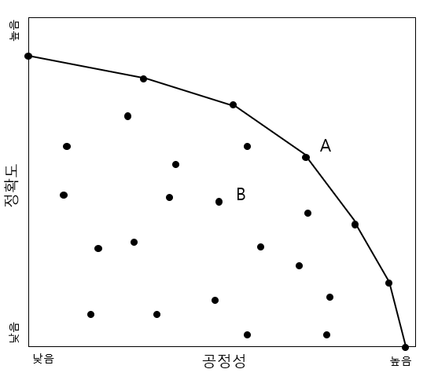
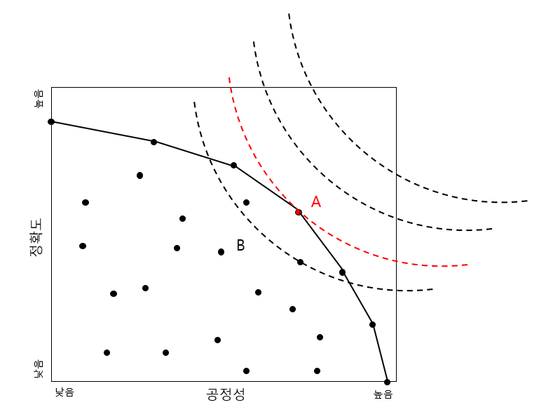

3 공정한 인공지능을 위한 기술적 해법
박찬경 (경북대학교 미디어커뮤니케이션학과)
미국의 정치철학자 존 롤스(Barocas and Selbst 2016; Dwork et al. 2012 역시 참조하라.)는 <공정성으로서의 정의 Justice as Fairness>(Barocas and Selbst 2016)라는 유명한 에세이에서 정의의 원칙을 확립하기 위해 ‘무지의 베일(vail of ignorance)’이라는 가상의 상황을 가정한다. 이미 이러저러한 자신의 이해관계를 가지고 있는 사회구성원들이 만족할만한 정의의 원칙을 확립하기란 너무도 어려운 일이니, 자신의 이해를 모르고 있는 상황에서 사람들이 어떠한 원칙에 합의하게 될지를 상상해 보자는 것이다. 롤스는 이러한 가상적 모형이 필요한 이유로 정의의 원칙을 ’형이상학적’ 선의 원리로부터 도출하는 보편적 정의에 대한 논의를 피하는 대신, 헌법 기반의 민주주의 사회에 적합한 정의의 원칙을 ’공정(fairness)’라고 하는 더 분명한 목표 위에 재정립하는 것을 들었다. 조금 더 풀어 설명하지면, 롤즈가 보기에 도덕 목표로써 정의를 바라보게 되면 종교적 목적론, 공동체의 공공선과 같이 정의하기 어려운 개념들이 섞여들어가므로, 그러한 방식으로는 사회구성원이 동의할 수 있는 정의의 원칙을 도출하기 어렵다는 것이다. 따라서, 민주주의라는 시민들이 참여한 일종의 ’게임의 규칙’으로부터 (선함이 아니라) 타당함과 우선성을 논리적으로 도출하고, 이를 바탕으로 하는 ’공정’이라는 비교적 단순한 규칙으로 정의의 원칙을 재사고하자는 것이다. 요컨대, 롤스가 ’정의’를 ’공정’으로 표현한 것은 공정이라는 개념이 정의라는 난제에 비해 단순하고 구체적이라고 보았기 때문이라고 할 수 있다.
그러나, 우리가 최근 한국사회의 여러 갈등에서 목도하고 있는 바는, 정의라는 말을 공정이라는 새로운 목표로 대체한다고 해도 문제의 복잡성은 여전히 매우 크다는 것이다. 예컨대, 폭발하는 젠더 갈등 속에서 할당제에 대한 청년 남녀의 입장 차이를 떠올려 보면, ’공정’이라는 용어에 대해 대단히 다른 입장을 가지고 있다는 것을 알 수 있다. 최근 조사에 따르면, 남성은 공정을 기회의 평등으로, 여성은 결과의 평등을 얻기 위한 개입으로 이해하고 있는 것으로 보이기도 한다(홍찬숙, 2021).
한 걸음 더 나아가, 공정한 인공지능을 생산해야 할 때 문제는 한층 더 복잡해진다. ’인공지능의 문제는 인간의 문제다’라는 표현도 있듯이, 불공정한, 또는 편향적인 기계학습의 예측 결과는 대개 사회가 가지고 있는 불평등을 반영한다는 것이 잘 알려져 있다. 따라서, 인간이 만들어낸 불공정을 해소되지 않는 한, 인공지능은 인간의 편향된 관점을 (확대)재생산 할 것이다. 이것이 인공지능이 인간으로부터 물려받은 공정의 문제라면, 인공지능에게 고유한 문제도 있다. 좀 더 공정한 인공지능을 만들고자 인간이 의도적으로 노력한다고 할지라도, 인간이 공정함을 기계가 이해할 수 있게끔 분명하게 정의하지 못하는 한, 인공지능에게 공정함을 정확하게 요구할 방법이 없다는 것이 그것이다. 따라서, 철학자, 수학자, 공학자, 법학자들은 융합 학문의 영역에서 기계가 이해할 수 있는 ’공정함’을 수학적으로 정의하고자 해왔다.
이러한 연구자들의 노력은 얼마간 긍정적인 성취와 비관적인 결론을 동시에 만들어냈다. 긍정적인 측면으로는, 연구자들은 이러한 노력을 통해 다양한 공정성의 수학적 정의를 알게 되었으며, 이를 통해 데이터 표집, 알고리즘 설계, 후속 처리 등을 통해 알고리즘이 (미리 정한 정의에 따라) 조금 더 공정한 결과물을 내도록 유도할 수 있는 방법을 개발할 수 있었고, 이러한 정의들과 인간 세계가 가지고 있는 제도들과의 관계에 대해서 더 분명하게 알게 되었다. 반대로, 공정성의 엄밀한 정의를 통해 알게 된 중요한, 그리고 불만족스러운 사실 중 하나는 우리가 사용하는 공정이라는 통념이 사실 하나의 개념이 아니었다는 것이다. 그리고 더 중요하게는 그러러한 공정의 개념들이 상호 모순되어 동시에 성취할 수 없다는 것 역시 알게 되었다.
이는 충격적인 결론인 것처럼 보이지만, 인공지능이 인간의 문제를 대신 해결해 줄 수 없다는 당연한 결론의 또 다른 변주이기도 하다. 또, 문제의 해결은 문제를 분명히 하는 것이라는 관점에서 생각해보면, 공정한 알고리즘에 대한 기술적 논의는 우리가 앞으로 인공지능과 어떻게 상호작용해야 하는가라는 질문에 대한 중요한 진전이라는 점은 부정할 수 없을 것이다.
공정한 알고리즘에 관한 논의는 많은 분야를 망라하지만, 이 장에서는 인공지능이 에측하고자 하는 진실을 (사후적으로라도) 알 수 있는 ’지도학습(Supervised Learning)’에 적용할 수 있는 조건부 확률(Conditional Probability) 개념에 기반한 공정의 정의들을 중점적으로 살펴볼 것이다. 더 나아가, 공정 개념의 엄밀화를 통해 인간이 분명하게 인지하게 된 인공지능의, 그리고 인간 사회가 공정에 관해 가지고 있는 근본저 딜레마에 대해 논의할 것이다. 마지막으로, 공정의 수학적 정의를 기반으로 한 인공지능을 더 공정하게 만드는 기술적, 제도적 해결책, 비지도학습 상황에서의 공정성 문제 등 더 심화된 주제에 대해서는 비교적 간단히 훑어보되, 더 읽을거리를 관심있는 독자들의 학습을 돕고자 한다.
3.1 COMPAS 알고리즘
수학적으로 정의된 공정성 개념에 쉽게 접근하기 위해서 COMPAS라는 범죄자 프로파일링 소프트웨어의 유명한 사례에 대해 먼저 논의해 보자. COMPAS (Correctional Offender Management Profiling for Alternative Sanction)는 Northpointe(현 Equivant)라는 기업에 의해 개발된 프로그램으로 범죄자의 신상 정보를 이용하여 재범 가능성을 예측하는 기능을 가지고 있다. 이는 미국 뉴욕, 위스콘신, 캘리포니아 등의 지방 법원에서 보석 결정 등을 내리는데 보조 도구로 사용되었다. 미국의 탐사보도언론 프로퍼블리카(Propublica)는 COMPAS에 의해 내려진 결정을 분석한 결과, COMPAS에 의한 자동화된 결정이 인종에 따라 편향되었다고 폭로하였다.
아래 테이블은 <알고리즘이 지배한다는 착각Outnumbered>이라는 책에서 저자 데이티드 섬프터가 원 데이터를 재구성한 알기 쉬운 예이다.1
| 흑인 | 고위험 | 저위험 | 합계 |
|---|---|---|---|
| 재범○ | 1,369 | 532 | 1,901 |
| 재범✕ | 805 | 990 | 1,714 |
| 합계 | 2,174 | 1,522 | 3,615 |
| 백인 | 고위험 | 저위험 | 합계 |
|---|---|---|---|
| 재범○ | 505 | 461 | 966 |
| 재범✕ | 349 | 1,139 | 1,488 |
| 합계 | 854 | 1,600 | 2,454 |
위의 표에서 ‘고위험’이 의미하는 바는 COMPAS가 해당 범죄자에 대해 재범 가능성이 높다고 판정한 경우를, ’저위험’은 그 반대의 경우이다. 즉, 각 열(column)은 자동 분류 알고리즘의 예측 결과에 대응한다. 반면, 각 행(row)에 표현된 ’재범○’, ’재범✕’는 실제로 이후에 데이터에 포함된 범죄자들이 재범을 저질렀는지 여부를 의미한다. 즉, 이 테이블은 COMPAS 알고리즘의 재범 가능성에 대한 예측과 사후적으로 밝혀진 실제 재범 여부를 모두 제공하기에, 이를 이용해 알고리즘 예측의 정확성을 평가해볼 수 있는 지도학습 모형에 해당한다.
프로퍼블리카는 COMPAS의 편향된 예측에 대한 우려를 표명하면서, 몇 가지 통계치를 제시하였다. 위의 데이터에서 가장 먼저 비판할 수 있는 바는, 흑인이 고위험군으로 판정될 확률은 60%(=2174/3615)인 반면, 백인이 고위험군으로 판정될 확률은 34.8%(=854/2454)에 불과하다는 것이다. 물론, 이는 실제 두 인종 간의 재범률 차이에서 기인한 것일 수도 있다. 하지만, 프로퍼블리카는 알고리즘의 정확도가 두 인종 간에 다르게 나타난다는 점에서 또 다른 우려를 표명한다. 예컨대, 흑인의 경우 데이터에 포함된 1,714명이 실제 재범을 저지르지 않았는데도 불구하고, 그 중 805명은 COMPAS가 고위험군으로 분류하여 46.9%%(=805/1714)의 위양성률(false positive rate)을 보인 반면, 백인은 23.5%(=349/1488)의 위양성률을 가지고 있다는 것이다. 즉, 위의 데이터에 따르면, COMPAS 알고리즘은 백인 범죄자에 대해서는 그들에게 불리한 오류를 발생시킬 확률이 더 적다.
이에 대해 COMPAS를 개발한 Northpointe는 이와 다른 정확도 개념을 이용해 프로퍼블리카의 비판을 반박하였다. 예컨대, 고위험군으로 예측된 2,174명의 흑인 중 1,369명이 실제 다시 범죄를 저질러, 63%(=1,369/2,174)의 정확도를 보였으며, 고위험군으로 예측된 854명의 백인 중 505명이 재범을 저질러, 59%(=505/854)의 정확도를 보였기에, COMPAS알고리즘은 두 인종 집단 사이에서 정확도의 큰 차이를 보이지 않았다는 것이다.
이와같이 혼란스러운 논란의 바탕에는 사실 공정성이라고 부를만한 다양한 기준이 있으며, 이들이 서로 모순될 가능성이 크다는 매우 근본적인 문제가 존재한다. 이를 좀 더 분명하게 이해하기 위해 이제 약간의 수학적 기호와 정의를 도입해보도록 하자.
3.2 공정성의 수학적 정의
COMPAS 사례를 통해 살펴본 공정성 개념들을 수학적으로 일반화하기 위해 우리는 몇 가지 확률변수(random variable)2들을 정의할 것이다. 먼저, 우리가 예측하고 싶은 ’진실’을 \(Y\)라고 부르자. COMPAS의 예에서 \(Y\)는 실제 재범 여부에 해당한다. \(Y=1\)라는 확률변수 \(Y\)의 실현값은 재범을 실제 저질렀음을, \(Y=0\)은 반대의 경우를 의미한다고 하자. COMPAS가 예측을 할 때는 물론 재범 여부를 알 수 없지만, 위의 경우와 같이 사후적으로는 해당 데이터가 수집되어 \(Y\)를 알게되는 경우가 있고, 이를 통해 인공지능의 예측 결과의 정확성을 사후적으로 평가해볼 수 있다. \(Y\)와 달리, \(R\)은 알고리즘의 예측을 표현하는 확률변수라고 하자. 즉, 위의 예에서 COMPAS가 해당 범죄자를 재범 ’고위험군’이라고 평가한 경우에는 \(R=1\), ’저위험군’이라고 평가한 경우에는 \(R=0\)이라는 확률변수의 실현값으로 표현할 할 수 있을 것이다.
이제 개개인이 가지고 있는 특성 역시 확률변수로 표현하자. 수학적 공정성의 정의는 먼저 ‘차별’이 발생할 수 있는 ’민감한 개인의 특성’, \(A\)와 그렇지 않은 일반적인 개인의 특성 \(X\)가 구분된다고 가정한다. COMPAS의 예에서 \(A\)는 인종에 해당할 것이다. 기호의 간결함을 위해 \(A=a\)는 개인이 흑인인 경우를, \(A=b\)는 개인이 백인인 경우를 의미한다고 가정하자. \(X\)는 민감속성 이외의 모든 다른 특성이 될 것이다. 지금까지의 정의를 모두 종합하면 아래와 같다.
- \(Y \in \{0,1\}\): 예측하고자 하는 진실 (e.g. 실제 재범 여부)
- \(R \in \{0,1\}\): 모형의 예측 (e.g. 고위험군/저위험군)
- \(A \in \{a,b\}\): 민감한 개인의 특성 (e.g. 인종)
- \(X\): 민감하지 않은 개인의 특성 (e.g. 거주지역, 직업)
물론 \(Y\), \(R\), \(A\)는 위와 같이 0/1 또는 a/b처럼 이분법적으로 구분될 필요는 없으며, 더 많은 카테고리가 존재하는 경우, 또는 해당 변수들이 연속적으로 변화하는 숫자일 경우로 확장할 수도 있다. 여기서는 설명의 간결함을 위해 위와 같이 단순하게 표현할 수 있는 경우에만 논의를 한정할 것이다.
위에서 프로퍼블리카 제기했던 비판 중 첫 번째 비판-즉, 흑인을 고위험군으로 예측하는 경우가 백인을 고위험군으로 예측하는 경우보다 더 많다는 지적을 확률로 표현하면 다음과 같다.
\[P(R=1|A=a) > P(R=1|A=b)\]
여기서 \(P()\)는 (괄호 안에 표시할) 어떤 사건의 확률을 타나내는 수학 기호이다. 예컨대 \(P(R=1)\)은 (인종을 막론하고) COMPAS가 고위험군이라고 예측할 확률을 의미한다. \(P( | )\)라는 조금 더 복잡한 기호는 \(|\) 기호 뒤에 표시된 어떤 조건 하에서의 확률, 즉, ’조건부 확률(Conditional Probability)’을 의미한다. 즉, \(P(R=1|A=a)\)은 ’인종이 흑인인 조건 하에서(\(A=a\)) 고위험군으로 예측(\(R=1\))될 확률’을, \(P(R=1|A=b)\)는 ’인종이 백인인 조건 하에서(\(A=b\)) 고위험군으로 예측(\(R=1\))될 확률’을 의미한다. 프로퍼블리카의 비판은 이 두 조건부 확률이 동등해야 ’공정한 알고리즘’이라는 생각을 전재한다. 이를 ’통계적 동등성(statistical parity)’로서의 공정성이라고 한다.
프로퍼블리카의 COMPAS 알고리즘에 대한 두 번째 비판은 알고리즘의 ‘정확도’가 두 인종 사이에 달랐다는 점이었다. 구체적으로, ’위양성률(False Positive Rate)’, 즉, 실제 재범을 저지르지 않은 흑인들을 고위험군으로 잘못 분류하는 경우가 백인에게 동일한 오류가 발생하는 경우에 비해 지나치게 잦았다는 것이다. 이러한 비판을 조건부 확률의 기호로 표현하자면 다음과 같다.
\[P(R=1|Y=0, A=a) > P(R=1|Y=0, A=b)\] 여기서 \(P(R=1|Y=0,A=a)\)는 ‘실재 재범을 일으키지 않았고(\(Y=0\)), 흑인이라는 조건(\(A=a\)) 하에서’ 고위험군으로 예측(\(R=1\))될 확률이, ‘실재 재범을 일으키지 않았고(\(Y=0\)), 백인이라는 조건(\(A=b\))’ 하에서 고위험군으로 예측(\(R=1\))될 확률보다 높다는 것이다.
반면, Northpointe의 재반박, 즉, 고위험군으로 분류된 사람 중에 실재 재범을 일으킬 확률은 흑은과 백인 사이에 거의 같다는 주장은 어떻게 표현할 수 있을까? 다음의 수식을 살펴보자.
\[P(Y=1|R=1, A=a) = P(Y=1|R=1, A=b)\]
여기서 \(P(Y=1|R=1,A=a)\) 라는 표현과 앞서 프로퍼블리카의 비판에서 보았던 \(P(R=1|Y=0,A=a)\)라는 표현을 비교해보자. \(Y\)에 해당하는 값이 0이냐, 1이냐, 즉, 재범을 일으키지 않은 경우에 주목하느냐, 재점을 일으킨 경우에 주목하느냐 라는 차이도 있지만, 더 중요한 차이는 \(P(Y|R,A)\)라는 표현은 \(Y\)가 조건문 앞에, \(P(R|Y,A)\)라는 표현은 \(R\)이 조건문 앞에 있어, 확률을 표현하고자 하는 사건과 조건 사이의 위치가 뒤바뀌었다는 것이다. 즉, 프로퍼블리카와 COMPAS는 두 개의 자른 조건부 확률에 주목하고 있는 것이다. 프로퍼블리카는 재범으 저지르지 않았는데 고위험군으로 분류되는 ’억울한 일이 발생하는 오류’에 주목했다면, COMPAS는 고위험군이라는 분류가 얼마나 잘 재범자를 찾아낼 수 있는지를 말해주는 ’성능’에 주목했다고 볼 수 있다. 이렇게 다른 조건부 확률에 주목하게 되면 공정성에 대해 다른 평가를 하게 된다. 아니, 더 정확하게는 이 사태가 보여주는 것은 우리가 일반적으로 ’공정성’이라고 부르는 개념 속에는 여러 가지 다른 개념이 포함되어 있다는 것이다.
앞서 우리는 적어도 3개의 공정성 개념을 본 셈이다. 이제, 수학 기호를 이용해 이를 조금 더 일반화해 보자. 이러한 일반화 작업을 통해 사실은 무수히 많은 공정성 개념이 존재할 수 있다는 사실을 알 수 있다. 더 나아가, 안타깝게도 대부분의 경우 이러한 다수의 공정성 개념들은 동시에 성립 가능하지 않는 경우가 많다.
3.3 수학적 정의
다음의 공정성 정의들은 위의 프로퍼블리카와 COMPAS 간의 논쟁에서 등장한 수학적 공정성 개념을 조건부 확률을 통해 일반화한 것이다.
3.3.1 비인지(Unawareness)
\[P(R=1|X,A)=P(R=1|X)\]
이 수학적 정의에서 중요한 것은 등호 왼편에는 조건부 확률의 조건분에 \(A\)가 포함되어 있는 한편, 오른쪽에는 그렇지 않다는 것이다. 이것이 의미하는 바는, \(A\)라는 민감한 속성이 포함되어 있든 포함되어있지 않든, 알고리즘의 예측 결과는 같아야 한다는 것이다. 다시 말해, 알고리즘이 민감 속성을 ‘모른채(unaware)’ 예측을 생산해야 한다는 것이다.
이러한 공정성 요건은 매우 직관적이다. 특정한 민감 속성을 고려한 차별적 예측이 문제를 발생시키는 것이라면, 해당 민감 속성으 고려하지 않으면 되는 것이 아닐까? 이러한 직관성으로 인해, 비인지 조건은 기존 공정성과 관련된 여러 법률들과도 잘 어울린다. Barocas와 Selbst가 매우 영향력 있는 2016년 논문에서 지적한 바와 같이, 자동화된 알고리즘 이전부터 내려온 공정성과 관련된 법률들은 예측에서의 불평등한 대우(disparate treatment) 또는 예측의 불평등한 효과(disparate impact)를 규제한다. 여기서 전자는 예측 또는 판단 ’과정’에서 여러 집단을 불평등하게 다루어서는 안 된다는 것을 의미하기에, 실질적으로는 예측 대상이 특정 민감 속성을 가졌는지를 예측 과정에 포함시켰을 경우 이를 불평등 대우로 여기고 처벌하는 방식의 법 논리를 가지게 된다. 즉, 민감속성의 비인지를 요구하는 것이다. 이는 과거 법을 인공지능을 위한 예측에 그대로 활용할 수 있다는 대단히 큰 장점이 있다.
그러나, 이러한 공정성의 요구에는 치명적인 단점이 있다. 바로 민감 속성과 통계적으로 상관관계를 갖는 대리변수들이 존재할 수 있다는 것이다. 예컨대, 특정 지역에 특정 인종이 집중적으로 거주한다면 (에미넴이 출현한 영화 <8마일>에 나오는 디트로이트를 떠올려보자), 우편번호라는 전혀 민감해보이지 않는 속성은 인종이라는 민감한 속성을 ‘높은 확률로’ 알아낼 수 있는 ‘대리변수(proxy)’가 된다. 특히, 과거에 비해 훨씬 더 많은 변수를 예측에 한꺼번에 사용할 수 있는 ’빅데이터’를 통한 예측 환경에서는 매우 많은 대리변수가 존재해서 민감 속성으 거의 정확하게 추론할 수 있는 경우가 많다. 따라서, 단순히 민감속성을 예측에 사용해서는 안 된다는 비인지 조건은 알고리즘의 공정성을 달성하기에는 ’지나치게 약한’ 조건일 가능성이 크다. 그 때문에, 많은 현대의 공정성 조건들을 이러한 대리변수의 존재를 전제한 경우가 많다.
이는 어떤 의미에서는 절차적 공정성을 의미한다.
3.3.2 통계적 동등성(Statistical Parity)
\[P(R=1|A=a)=P(R=1|A=b)\]
통계적 동등성은 문헌에 따라서, 독립성(Independence), 또는 인구적 동등성(demographic parity), 집단 공정성(group fairness)라고 부르기도 한다.
이 정의는 프로퍼블리카의 COMPAS에 대한 첫번째 비판에서 이미 본 것으로, 집단 사이에 예측의 차이가 없어야 한다는 것을 의미한다. COMPAS와 조금 다른 예를 들자면, 자동화된 알고리즘이 대출 승인을 해 주는 경우, 대출 확률이 남성과 여성 간에 차이가 없어야 한다는 것이다. 이는 앞서 Barocas와 Selbst의 구분에서 두 번째 종류의 공정성 법률, disparate impact 요건과 관련된다. 즉, 예측 과정이야 어떻든, ‘결과적으로’ 집단 간에 차이가 없어야 한다는 주장이다.
많은 경우, 이러한 요건은 글자 그대로 적용된다기 보다는, 근사식 형태로 요구된다. 즉, 두 집단 사이의 예측치 차이가 ’지나치게 커서는 안 된다’는 식이다. 이러한 방식은 기존 법안의 공정성 법률에서 종종 관찰되는데, 미국 법률의 four-fifth rule에 해당한다. 80%의 법칙이라고 옮겨도 좋을텐데, 어떤 집단도 가장 선정 확률이 높은 집단에 비해 선정확률이 80%이하로 내려가서는 안 된다는 것이다. 즉, 대출 승인률이 남성에게 50%라면 여성에게 적어도 40%는 되어야 한다는 것이다.
어떤 과정을 통해서 예측을 하던간에 집단 간 같은 정도의 예측 결과를 요구한다는 점에서 통계적 동등성은 매우 강한 공정성 요건인 것처럼 보인다. 하지만, 해당 요구사항에는 몇가지 문제점이 있다. 가장 쉽게 생각할 수 있는 문제는, 실제 예측하고자 하는 진실 \(Y\)와 민감한 속성 \(A\) 사이에 상관관계가 있을 수 있다는 점을 고려하지 않는다는 것이다. 예컨대, 흑인과 백인 사이의 ‘평균적인’ 대출상환능력에는 실제 20% 이상의 차이가 있을 수도 있다. 이에 대해 미리 20%의 상한을 결정하는 것은 은행으로 하여금 손해를 감수할 것을 요구하는 셈이다. 물론, 이는 장기적인 사회적 변화를 위해서 기업이 감수해야 할 몫이라고 합의할 수 있는 부분이라고 할 수 있다.
하지만, 더 중요한 문제는 이른바 ‘laziness’라는 문제이다. 즉, 평균적으로 예측치의 비율만 집단간 유사하게 맞추면 되기 때문에 예측이 얼마나 중요한지는 중요하지 않다는 것이다. 예를들어, 통계적 동등성에 따라 앞서의 예와 같이 40%의 대출 승인 비율을 준수해야 하는 집단이 있다면, 이들에게 얼마나 상환 능력에 따라 대출 승인을 해야 하는지는 통계적 동등성과 아무런 관련이 없다. 극단적으로 40%의 확률로 윗면이 나오는 동전을 던져서 랜덤하게 대출승인을 해 준다고 해도 통계적 동등성은 달성할 수가 있는 것이다. 이러한 문제점을 해결하기 위해서는 ’정확성’ 개념이 공정성 안으로 들어올 필요가 있는데, ’정확성’이 예측 결과(\(R\))가 실제(\(Y\))를 얼마나 잘 맞추는가에 대한 측정치인 이상, 공정성 정의 안에 \(Y\)가 포함되어야 한다는 것으 의미한다.
또 한 가지 근본적인 문제점은 세상에는 실제 불평등이 존재한다는 것이다.
앞으로 이야기할 공정성 개념은 주로 이 두 가지 문제를 해결하기 위한 개념들이라고 볼 수 있다.
이러한 두 가지 문제점은 사실 여기서 핵심은 두 가지 문제이다. - Y를 도입해서 정확성에 대한 고려가 필요하다는 것. - 실제 세상에는 불평등이 존재한다는 것. 이 두 가지 문제는 앞으로도 계속 문제가 되고 회피하기 어렵다.
3.3.3 분리성(Seperation)
- 정확성이 왜 중요한가 - 고릴라 사태를 생각해봐라….
equalized odd, 정확도 동등성(accuracy parity)
참양성 동등 \[P(R=1|Y=1, A=a)=P(R=1|Y=1, A=b)\]
아래는 위양성동등 \[P(R=1|Y=0, A=a)=P(R=1|Y=0, A=b)\]
참음성 동등. \[P(R=0|Y=0, A=a)=P(R=0|Y=0, A=b)\]
아래는 위음성동등 \[P(R=0|Y=1, A=a)=P(R=0|Y=1, A=b)\]
이제 조건문에 \(Y\)가 등장했다. 이는 특정 정확도, 즉 진실에 대비해서 얼마나 예측치가 정확하게 결과를 알아냈는지에 대한 비율을 표현하는 네가지 정확도, 참양성률(True Positive Rate; TPR), 위양성률(False Positive Rate; FPR), 참음성률(True Negative Rate; TNR), 위음성률(False Negative Rate; FNR) 등이 집단간에 동등할 것을 요구하는 공정성의 정의이다.
예컨대 참양성 동등의 경우, 민주주의에서 강조하는 특정한 공정성 개념, ’기회의 평등’과 직접적인 연관을 갖는다. 왜냐하면, 실재로 맞춤한 능력을 갖는 사람(\(Y=1\))이 알고리즘에 의한 예측에 의해 기회를 얻을(\(R=1\))확률이 집단 간에 동일(\(P(R=1|Y=1,A=a)=P(R=1|Y=1,A=b)\))해야 한다는 것이 바로 기회의 평등의 개념이기 때문이다.
문제는 잘 기계학습에서이 네 가지도 하나가 성립한다고 해서 다른 정확도가 함께 올라가리라는 보장이 없을 뿐더러, 어떤 경우에는 상호 충돌하여 한 가지 정확도가 개선되면 다른 정확도는 하락하는 트레이드오프(trade-off) 관계가 성립하는 경우가 많다는 것이다. 따라서, 실질적으로는 여러 정확도 개념 중에서 예측의 대상이 되는 사람들에게 ’억울한 오류’를 막기 위한 정확도, 또는 오류율 개념에 주목하는 경우가 많다. 예컨대, 재범 위험성이 큰 사람은 실재 재범을 저지르지 않음(\(Y=0\))에도 ’양성(positive; \(R=1\))’으로 예측되는 경우 ’억울한 피해’가 발생할 수 있으므로, 잘못된 양성 판정, 즉, 위양성률에 주목하여, 집단 간에 위양성률이 동등하도록 하는 것을 최우선으로 한다. 반면, 대출 상환 능력을 예측하여 이를 바탕으로 대출 승인을 하는 경우, 실재로 대출을 갚을 수 있는 능력이 있음에도(\(Y=1\)), 대출을 승인을 허용하지 않는 음성 판정(\(R=0\))을 하는 경우, 이는 대출 신청자 입장에서는 억울한 판정이므로, 이렇게 잘못 음성 판정을 내릴 확률, 즉, 위음성률을 집단간에 동등하게 하는 것이 공정한 알고리즘의 우선적인 선택이 된다.
여기서 ’우선적 선택’이라는 표현을 이해하는 것이 중요하다. 알고리즘의 공정성을 확보하고자 하는 조직은 결국 여러 공정성 개념 중에서 더 중요한 개념과 덜 중요한 개념 사이에서 조직의 목표에 따라 균형을 맞추는 선택을 해야 한다는 것이다. 이는 파래토 원리에 따른 균형이라는 마지막 테마와 직접적으로 연결된다.
기본적으로 이 관점은 차별적 현실을 인정하자는 관점. 있는 능력 차이를 인정하고 그 안에서 정확도만 동일하면 된다…
‘최우선’ -> 결국 이것은 선택, 그리고 파레토….
여기서는 비지도 학습은 뺄 것.
3.3.4 충분성(Sufficiency)
프로퍼블리카의 비판에 대한 COMPAS의 반비판, 즉, 재범 위험이 크다고 예측한 사람 중에서 실재 재범을 일으킨 확률이 인종 집단 간에 크게 차이나지 않는다는 주장은 분리성과는 상이한 정확도 개념을 이용하여 공정성을 정의하는 관점에 바탕을 두고 있다. 즉, 알고리즘이 양성 또는 음성이라고 예측했을 때 그것이 얼마나 실재와 일치하는지, 일종의 ’예측의 성능/성과’에 초점을 맞추는 관점이다. 충분성은 문헌에 따라 예측률 동등(Predictive Rate Parity)라고 부른다. 이를 수식으로 표현하면 다음과 같다.
양성예측동등(Positive Predictive Parity) \[P(Y=1|R=1,A=a)=P(Y=1|R=a,A=b)\] 음성예측동등(Negative Predictive Parity) \[P(Y=0|R=0,A=a)=P(Y=0|R=0,A=b)\]
Recall과 Precision 차이에 해당. -> 머신러닝에서 이 두개는 전혀 동등하지 않으며, 대부분 동시에 성취 불가능한다.
단점은 분리성과 유사하게 기존의 차별을 용인하는 문제.
사실은 이러한 공정성 개념이 전부는 아니다. 위의 공정성 개념들을 일부 수정하고자 한 것. 예컨대 마이크로소프트의 Cynthia Dwork(윤리적 알고리즘 분야에서 최고의 권위를 가지고 있는 미국의 여성 컴퓨터공학자)와 동료들이 제시한 개인적 공정성(Individual Fairness)은 비슷한 특성을 가지고 있는 개인이 다른 예측 결과를 경험해서는 안 된다는 의미에서의 공정성 개념으로, 우리가 앞서 살펴본 공정성 개념들이 집단간 비교를 통해 정의되는 것에 비해서, 각 개인에게 공정한 경험을 보장하려고 하는 시도라는 점에서 의의가 있다. 또한, 영국의 앨런 튜링 연구소의 Chris Russell과 동료들이 제안한 인과적 공정성(Causal Fairness)은 민감한 속성이 다른 비민감 속성의 ’원인’으로 영향을 미쳐 최종적으로 예측 결과에 영향을 미치는 메커니즘을 고려하고자 하는 공정성 개념이다. 이러한 분야는 여전히 많은 발전을 이루고 있고, 논의되고 있는 측면이 커 여기서는 생략하도록 한다.
3.4 불가능성 정리 (Impossibility Theorem)
이렇게나 많은 공정성 개념이 존재한다는 것은 그 자체로 문제이지만, 코넬의 정보과학 대가인 Jon Kleignberg등이 명명한 바, 이른바 ’불가능성 정리’라고 부르는 수학적 결과는 더욱 더 큰 난점을 제기한다. 이 불가능성 정리에 따르면, 우리가 위에서 살펴본 공정성 정의들은 수학적으로 동시에 성립할 수 없다는 것이다. 이를 다시 표현하자면, 우리가 말하는 공정성이라는 용어 속에는 기실 다양한 차원의 공정성 개념들이 숨어 있는데, 이들은 본질적으로 서로 모순된다는 것이다. 따라서, 프로퍼블리카가 ’분리성’에 근거하여 제기했던 비판과 ’충분성’에 근거해서 Northpointe가 제시한 반박은 애초부터 엇갈릴 수밖에 없고, 그 입장 차이는 해소할 방법이 없다는 것이다!
그렇다고 해서 이러한 결론이 공정성은 우리가 성취할 수 없는 목표라는 것을 의미하는 것일까? 그렇지 않다. 사실, 이렇게 서로 모순되는 공정성 개념이 우리의 ’공정성’이라는 용어의 일상적 용법에 숨어있었다는 것을 알아내는 것은 후퇴라기 보다는 한발 전진이라고 할 수 있다. 문제 해결의 전제는 우리가 마주한 문제가 무엇인지를 아는 것이기 때문이다. 이렇게 사회과학적 영역에서 수학적 조작화를 통해 인간 언어의 모호성을 극복하고 다양한 차원들이 존재함을 드러내서 더 나아가 일종의 불가능성 정리에까지 도달하는 것은 처음이 아니고, 오히려 사회과학의 진전에서 중요한 역할을 하였다.
예컨대, 경제학, 정치경제학…. (내 영어논문에서…)
3.5 파레토 경계를 통한 균형 찾기
문제가 양립할 수 없는 다수의 목표들이라면, 결론은 결국 목표들 간의 취사선택 또는 타협이 될 것이다. 그리고 수학저 조작은 ‘체계적 타협’을 위한 도구까지 마련해준다(Kearns). 이러한 타협을 달성하는데 핵심적으로 사용하는 개념적 도구는 파레토 효율성(Pareto Efficiency)라는 개념이다. 이 개념은 19세기와 20세기초에 주로 활동한 빌프레도 파레토(Vilfredo Pareto)라는 이탈리아의 사회학자이자 경제학자의 이름을 딴 것으로, 파레토 효율성 말고도 파레토의 이름이 붙은 다른 유명한 개념들도 많이 있습니다. 파레토 효율성은 사회적 최적상태(optimality)를 규정하는 하나의 방식으로, 대략적으로 “어느 누군가의 희생 없이는 다른 사람들의 상태에 대한 개선이 불가능한 상태”를 의미한다고 볼 수 있습니다. 이를 조금 더 일반화하자면, “하나의 목표에 대한 양보 없이 다른 목표들의 개선이 불가능한 상태”라고 생각할 수 있습니다. 그런데, 이러한 개념에 대한 설명이 그다지 ’최적상태’ 또는 ‘효율성’ 등의 표현과 어울리지 않는 것처럼 보이는 것도 사실이다. 사실 파레토 효율이라고 부를 수 있는 상태는 무수히 많이 존재한다. 오히려 파레토 효율성의 의의는 파레토 효율성 관점에서 ‘열등한’ 사회적 선택을 찾아내는 기준이 된다는 점에 있다고 볼 수 있다. 이를 이해하기 위해서 다음 그래프를 살펴보자.
아래 그림은 다시 그리는 것이 나을 수 있겠다…
 Ho, D. E. & Xiang, A. (2020). Affirmative algorithms: The legal grounds for fairness as awareness,
https://lawreviewblog.uchicago.edu/2020/10/30/aa-ho-xiang/
위의 그림은 자동화된 알고리즘을 이용하는 가상의 조직이 정확도(중 하나의 지표)와 공정성(중 하나의 지표)를 자동화된 판단을 통해 다렁하고자 하는 두 가지 목표라는 것을 가정하고 있다. 그래프 상의 각 점들은 그 조직이 선택할 수 있는 예측 알고리즘들이 성취할 수 있는 정확도와 공정성의 조합을 의미한다. 이제 가장 바깥에 있는 점들을 연결한 선을 살펴보자. 이 선 위에 존재하는 알고리즘은 ‘파레토 효율적’이다! 왜 그런가 예컨대 해당 선 위에 있는 알고리즘 A를 생각해보자. 이 알고리즘보다 공정성이 높은(즉, A보다 오른쪽에 위치한) 알고리즘을 선택하려면 어떻게 해야 할까? 일단, A가 위치한 경계선 오른쪽 바깥에 있는 알고리즘은 기술적인 한계로 인해 그 조직이 선택할 수 없는 알고리즘이다. 따라서, 즉, A에서 공정성과 정확성을 ’동시에’ 개선할 방법은 없다! 따라서, 공정성을 개선하기 위해서는 정확도를 희생하면서, 경계선 상 혹은 안쪽에 있는 다른 알고리즘을 선택하는 수밖에 없다. 같은 논리에 따라, 반대로 A알고리즘에서 정확성을 개선한 알고리즘을 선택하고 싶다면, 공정성을 다소 희생하는 수밖에 없다. 이제 “하나의 목표에 대한 양보 없이 다른 목표들의 개선이 불가능한 상태” 라는 파레토 효율성의 정의를 생각해보면, A는 정확히 해당 정의에 부합하는 알고리즘이라는 것을 알 수 있다. 사실, 이러한 논리는 경계선 상에 있는 모든 알고리즘에 적용된다. 따라서, 해당 경계선 상에 존재하는 알고리즘은 모두 ’파레토 효율적’인 알고리즘이다! 이러한 중요성 때문에 해당 경계선을 특별하게 ’파레토 경계(Pareto Frontier)’라고 부릅니다.
이제 파레토 경계 안 쪽에 있는 알고리즘들, 예컨대 B와 같은 알고리즘에 대해 생각해보자. B와 같은 알고리즘은 정확도와 공정성을 ‘동시에’ 개선할 수 있다. 왜냐하면 B에서 오른쪽 상단 방향으로 파레토 경계 안 쪽에 더 좋은 알고리즘이 존재하기 때문이다. 이렇게 두 가지 목표를 동시에 개선하느 것을 ‘파래토 개선(Pareto Improvement)’라고 부른다. 이렇게 파레토 개선이 가능한 알고리즘은 어떠한 희생도 없이 개선이 가능하므로, 개선된 알고리즘에 비해 확실히 ’열등한’ 알고리즘이라고 볼 수 있다. 따라서, 파레토 개선이 가능한 알고리즘을 ’파레토 열등(Pareto Dominated)’하다고 한다. 이제, 파레토 효율적인 알고리즘(=파레토 경계상의 알고리즘)은 파레토 개선이 불가능한 알고리즘이라는 것을 알 수 있고, 파레토 경계 안 쪽에 존재하는 알고리즘은 확실히 파레토 열등한 알고리즘이라는 것을 알 수 있다. 따라서, 이러한 파레토적 사고 방식을 통해 단 하나의 최적 알고리즘을 알 수 없다고 하더라도, 적어도 파레토 열등한 알고리즘이 아니라, 파레토 곡선 상의 파레토 효율적 알고리즘 중에 선택이 이루어져야 한다는 것을 알 수 있다!
그렇다면 파레토 경계상의 많은 알고리즘 중에는 어떠한 알고리즘을 선택해야 하는가? 여기서부터는 조직이 여러 목표들 사이의 경중을 어떻게 평가할 것인가에 대한 합의된 기준이 필요하다. 즉, 다수의 목표를 동시에 가장 최적 수준에서 달성할 수는 없으므로, 목표들 간의 ‘타협’이 이루어져야 하며, 이는 조직의 형태, 목적, 구성원의 생각, 제도 등에 따라 다를 수 있다는 것이다. 이러한 타협 역시 파레토 경계 위에서 단순히 ’감으로’ 이루어질 필요는 없다. 별도로 자세하게 다루어야 하는 내용이므로, 여기서 자세하게 다루기는 어렵지만, 해당 조직이 여러 목표 간에 어떻게 타협하는 것을 최선이라고 생각하는가, 혹은 그렇게 합의했는가를 일종의 조직의 선호를 나타내는 수학적 ’함수’로 표현할 수 있다. 그리고 그 함수는 다음과 같이 그래프로 표현 가능하다.

위의 그림에서 조직의 선호를 나타내는 곡선은 ‘무차별 곡선(indifference curve)’이라고 하는데, 해당 무차별 곡선의 형태는 정확성과 공정성 간의 타협에 대한 조직의 선호에 따라 달라진다. 이제 ’주어진 선호/합의’ 하에서 최적 알고리즘은 두 그래프가 만나는 점에서 결정된다. (경제학원론을 배운 학생이라면 이러한 사고 방식에 익숙할 것이다. 보지 못한 경우라도, 경제학원론 교과서의 소비자효용, 후생경제학 부분을 훑어보길 바란다. 이러한 선호 표현 방식과 그를 통한 의사 결정의 문제를 다루는 분야를 의사결정과학Decision Science이라고 부른다). 만약, 더 많은 정확성과 더 많은 공정성 개념을 고려하여 타협을 하고자 한다면, 위의 파레토 경계와 파레토 곡선은 더 이상 2차원의 그래프로 표현할 수는 없을 것이다. 그러나 시각화하기 어려운 고차원의 선택 문제라고 하더라도 동일한 논리를 통한 선택은 여전히 가능하다.
지금까지 훑어본 다양한 공정성의 개념과 양립불가능성 정리, 그리고 파레토 효율성을 통한 알고리즘 선택 과정은 알고리즘 공정성에 대한 과학적 논의가 던져주는 부정적 전망과 부정적 전망을 동시에 보여준다. 모두 합리적으로 들리는 여러 차원의 공정성을 동시에 달성할 수 없다는 것, 그리고 공정성과 예측의 정확성 역시 자주 충돌한다는 것은 인간사회가 인공지능의 자동화된 예측과 결정에 의존하는데 위험성이 수반된다는 것을 의미한다. 하지만, 이러한 양립불가능성은 자동화된 결정시스템에 고유한 것이 아니다. 인간에 의해서 동일한 결정이 이루어진다고 하더라도, 동일한 문제는 발생한다. 다만, 그 전에는 이렇게 엄밀한 수학적 접근을 시도하지 않았기에 우리가 가지고 있는 딜레마를 정확히 보고 있지 못했을 뿐이다. 오히려 공정성의 다양한 정의를 밝히는 작업은 조직의 합의된 목표와 그 안에 포함된 타협을 체계적으로 알고리즘 선택에 반영할 수 있는 도구를 제공한다는 점에서 진보라고 할 수 있다. 우리에게 이러한 도구들이 있는 한, 선택은 늘 가능하다. 중요한 것은 사람과 조직이 좋은 목표를, 좋은 타협안을 만들어내는 것이다. 사람의 일을 기계가 대신 해 줄수는 없는 일이라는 교훈은 또 다시 반복된다.
전체 워크플로우를 보여주는 그림
3.6 남은 문제들
우리가 위에서 살펴본 공정성 개념들은 ‘사후적으로라도’ 정답을 알 수 있는 기계학습, 즉, 지도학습(Supervised Machine Learning)을 사용하는 경우 예측 결과의 공정성을 개선하기 위해 사용할 수 있는 공정성 개념의 수학적 조작화라는 주제에 국한된 것이었다. 이외에도 인공지능 공정성을 다루는 다른 연구 영역들이 여전히 존재한다. 여기서는 교재의 목적상 이 모든 논의를 담지는 못하고, 그러한 논의들이 발전되고 있다는 것 정도를 지적하도록 한다. 관심있느 독자들은 챕터 말미의 ’더 읽을거리’와 ’참고문헌’을 참조하기를 바란다.
3.6.1 비지도학습의 공정성
가장 먼저 생각해볼 수 있는 것은 비지도학습(Unsupervised Machine Learning)에서의 공정성이다. 비지도학습은 우리가 위의 논의 속에서 사후적으로라도 알게 되는 것으로 가정했던 예측하고자 하는 진실, \(Y\)가 존재하지 않는 경우의 기계학습을 의미한다. 예컨대 온라인 소비자의 행동 데이터로부터 충성도가 높은 소비자를 찾아내는 상황을 생각해보자. ’충성도 높은 소비자’라는 것은 어차피 마케터의 관점에서 존재하는 관념일 뿐, 이를 명확하게 정의하기 어렵기 때문에, 사후적으로라도 ’충성도 높은 소비자’가 누구였는지를 알아내는 것은 어렵다. 이러한 경우에는 비슷한 행동을 보이는 소비자들끼릴 묶어내는 ’군집화(Clustering)’라는 비지도학습 기술을 사용한다.
또 최근 주목받는 예로 인공지능에 의한 기계번역을 하는 경우를 떠올려보자. 언어의 요소(예컨대 단어)를 다차원의 수치로 표현한다음, 이 수치가 가까운 다른 언어의 요소로 대체하는 방식을 이용한다. 예컨대, ’개’와 ’dog’는 다른 언어에 속한 단어이지만, 숫자로 표현된 두 단어의 거리는 가깝기에 이를 이용한 컴퓨터는 번역을 할 수 있는 것이다. 이렇게 언어를 다차원의 수치로 표현한 것을 ’임베딩(Embedding)’이라고 하는데, 단어의 임베딩을 찾아내는 작업 역시 비지도학습에 해당한다. 사실 임베딩은 자동 번역뿐 아니라, 언어를 음악으로, 그림으로, 동영상으로 ’번역’하는 기술에도 다양하게 사용된다.
임베딩 그림
정확성에 기반한 공정성 개념이였던 분리성, 정확성의 수식에 \(Y\)가 포함되었었다는 것을 상기해보면, 그러한 공정성 개념은 \(Y\)가 존재하지 않는 비지도학습에는 적용되기 어려울 것이다. 그럼에도 불구하고, 비지도학습에는 다양한 공정성 문제가 발생한다. 예컨대. ’여성’이라는 단어의 임베딩은 ’간호사’의 임베딩에 더 가깝고, ’남성’이라는 단어의 임베딩은 ’의사’의 임베딩에 더 가깝게 도출된다면, 이는 임베딩에 편향이 반영되어있다는 것을 의미한다. 그리고 이는 인공지능이 이용하는 학습데이터, 즉, 인간이 만들어낸 데이터가 편향된 이상 인공지능을 자동으로 해결해주지 않는다. 따라서, 최근에는 이를 해결하기 위한 다양한 공학적 시도들이 있다. 관심있는 독자들은 키언스의 책이나, Bolukbasi 등 (2016) 등의 논문을 살펴보기 바란다.
편행된 임베딩 그림
3.6.2 데이터의 편향성
또 한가지 중요한 주제는 데이터 그 자체가 가지는 편향이다. 앞서 언급한 바와 같이, 인공지능은 인간의 오류와 편견을 그대로 반복하거나, 더 나쁘게는 확대재생산한다. 이렇게 인간의 편향이 인공지능의 편향에 스며드는 가장 영향력 있는 통로는 알고리즘의 복잡한 디자인이라기 보다는 데이터 그 자체이다. 2016년, Barocas와 Selbst는 California Law Review에 데이터에 편향이 숨어드는 경로에 대한 매우 영향력 있는 논문을 게재하였다. 그러한 경로는 매우 다양해서, ‘좋은 근로자’, ’높은 금융 신용도’와 같이 알고리즘을 통해 예측하고자 하는 목표 그 자체를 정의하는데 있어 편향이 포함될 수 있다. 예컨대 ’좋은 근로자’를 정의하면서 흔히 남성성과 결부되는 속성을 포함시키는 경우가 그러하다. ’좋은 근로자’가 중립적으로 잘 정의되었다고 하더라도, 기존 사원 기록에서 특정 근로자를 좋은 근로자로, 특정 근로자를 부족한 근로자로 인간이 ’레이블링’하는 인간의 판단에도 편향이 포함될 수 있다. 예컨대, 과거 인사평가 기록을 인공지능의 학습데이터로 이용했는데, 남성 인사 평가자가 남성 사원에 대해 유리한 판단을 해 왔다면, 이러한 학습데이터를 이용한 인공지능은 편향적인 결정을 생산할 것이다. 또한, 데이터 수집 과정에서 특정 그룹이 과도하게 많이 데이터에 포함되거나, 적게 포함된 경우에도 데이터가 편향을 가지게 된다. 예컨대, 특정인종의 거주지역에 집중적으로 순찰을 수행하면서 발생한 기록을 인공지능의 학습 데이터로 이용했을 때(과대표집), 해당 인종의 범죄 위험을 높게 평가한다든지, 소수인종의 인터넷 이용 데이터가 다수인종에 비해 상대적으로 적어(과소표집) 소수 인종에 대한 예측이 지나치게 부정확한 예가 그렇다. 또, 직접적을 차별을 하지 않더라도, 특정 집단에게 유리한 개인 특성(예컨대, 출신대학, 출신지역 등)을 학습에 과도하게 많이 포함시키는 경우에도 편향이 발생할 수 있다.
3.6.3 개선 방법 (Fair Algorihtm)
마지막으로, 인공지능의 편향 위험이 관측되었을 때, 이를 수정하기 위한 방법에 대한 논의 역시 활발하다. 실질적으로 어떻게 인공지능을 어떻게 더 공정하게 만들 수 있을 것인지에 관한 논의이므로, 최근 컴퓨터공학자들의 노력은 이 부분에 집중되고 있다. 가장 기초적으로는 데이터에 대한 사전작업을 통해서 데이터에 숨은 편향성을 미리 교정한 후(전처리; preprocessing) 인공지능을 학습시키는 방법 (대표적으로는 Zemel et al.의 2013년 ICML 페이퍼), 인공지능 학습시, 위의 논의에서 정의한 공정성 요구조건을 일종의 학습의 제약으로 포함시키는 방법 (대표적으로는 Zafal et al.의 AISTAT 2017년 페이퍼), 인공지능의 학습이 종료된 후에 공정성 정의를 이용하여 학습 내용을 수정하는 방법 (이른바 후처리;postprocessing)으로 나눌 수 있다. 이 분야는 기술적인 지식을 요구하므로, 본 챕터에서 자세하게 다룰 수는 없지만, 기계하습의 원리에 대한 다소간의 이해가 있다면, 위에서 논의한 공정성의 정의들이 이러한 ‘공정한 알고리즘’ 개발에 직접적으로 사용되고 있다는 것을 알 수 있다.
위의 정의들이 이러한 개선방법을 만들어내는데 도구로 포함된다는 것이 중요하다.
요건 블로그 보면서 해결…
해법: Preprocessing 등등… -> 이 역시 ’그 외 토픽’에 포함시키는 것이…
- 데이터셑의 공정성: Barocas & Selbst
3.7 결론
이 장에서는 활발하게 공정한 인공지능(FML) 논의에서 ’지도학습 맥락에서 공정성의 수학적 정의’를 주로 살펴보았다. 이러한 공정성 개념에 대한 수학접 접근을 통해 알게된 결론은, 우리가 일상적으로 사용하는 ’공정’의 개념에는 서로 모순되는 다른 차원의 공정성 개념이 포함되어 있다는 것이다. 이는 일견 우리가 일반적으로 옳다고 여기는 가치를 동시에 성취 불가능하다는 부정적 결론으로 보일 수 있지만, 꼭 그렇지는 않다. 오히려 수학적 접근을 통해 우리가 이미 가지고 있던 개념의 모호성을 더욱 분명하게 함으로써 논의를 한걸음 진전시키는 것이라고 볼 수 있다. 구체적으로, 공정한 인공지능 논의를 통해 공정성은 더 발달한 인공지능이 기술적으로 해결할 수 있는 것이 아니라, 모순되는 목표들 간에 인간이 도출해내야 하는 타협과 합의를 통해서 성취가능한 것이라는 것을 알게 되었으며, 그러한 타협과 합의가 존재한다면 공정성의 수학적 정의는 이를 컴퓨터가 이해할 수 있는 언어로 번역함으로써 알고리즘을 인간의 결정에 부합하도록 체계적으로 개선할 수 있는 통로를 마련해주며, 대안으로 개발되고 있는 공정한 인공지능 알고리즘들은 대부분 이러한 수학적 정의에 의존하고 있다.
지금까지 본 바와 같이 인공지능의 편향은 인간 세계에 존재하는 편향이 반영된 것이며, 이를 해결하기 위한 방법 역시 인간의 합의에 달려있다. 수학적/공학적 논의는 인간 세계가 생각하는 공정을 기계가 이해할 수 있도록 하는 통로를 마련하는 것에 불과하다. 단, 이렇게 ㄷ 인공지능의 공정성을 인간의 불공정성의 단순한 반영으로 생각하는 일종의 수동적 접근을 전재한다. 이러한 수동적 접근은 분리성, 충분성의 정의에서 본 것과 같이 이미 세상에 존재하는 불평등은 주어진 것으로 받아들이는 경향이 있다. 그러나, 인간 세계의 불평등을 그대로 받아들이고 있는 인공지능이 인간의 개입없이 판별하는 영역이 늘어나면 늘어날 수록 그러한 불평등은 확대재생한 될 공산이 크다. 즉, 읟적인 교정을 위한 장치가 존재하지 않는 자동화된 결정은 현상 유지를 넘어서 사태를 악화시킬 가능성이 크다는 것이다. 따라서, 최근에는 affirmative action을 취하는 인공지능에 대한 논의가 발전하고 있으며, 여기에는 더욱 더 인간과 사회의 결정이 중요해진다. 개선은 적어도 인공지능이 혼자 할 수 없는 것. 인간이, 또는 인간과 인공지능의 ’연합’이 할 수 있는 것!!! 그것을 기계에게 떠넘기지 말고, 인간은 할 일을 피하지 말아야 할 것이다!
3.8 더 읽을거리
- Barocas & Selbst
- 임베딩 교정
- Barocas 최신 교과서 등등….
- 키언스
- 알고리즘이 지배한다는 환상.
3.9 참고문헌
홍찬숙 (2021) 청년의 무엇이 ‘성평등 프레임에서 젠더갈등과 공정성 프레임으로’ 변화한 것인가? 키언스
Bolukbasi, T., Chang, K. W., Zou, J. Y., Saligrama, V., & Kalai, A. T. (2016). Man is to computer programmer as woman is to homemaker? debiasing word embeddings. Advances in neural information processing systems, 29.
Chouldechova, A. (2017). Fair prediction with disparate impact: A study of bias in recidivism prediction instruments. Big data, 5(2), 153-163.
Kleinberg, J., Mullainathan, S., & Raghavan, M. (2016). Inherent trade-offs in the fair determination of risk scores. arXiv preprint arXiv:1609.05807.
Dwork, C., Hardt, M., Pitassi, T., Reingold, O., & Zemel, R. (2012, January). Fairness through awareness. In Proceedings of the 3rd innovations in theoretical computer science conference (pp. 214-226).
Russell, C., Kusner, M. J., Loftus, J., & Silva, R. (2017). When worlds collide: integrating different counterfactual assumptions in fairness. Advances in neural information processing systems, 30.
https://afraenkel.github.io/fairness-book/content/05-parity-measures.html
https://towardsdatascience.com/a-tutorial-on-fairness-in-machine-learning-3ff8ba1040cb
Barocas, S., & Selbst, A. D. (2016). Big data’s disparate impact. California law review, 671-732.
공정한 알고리즘은
샌델이 비판한 바와 같이 롤즈는 공정성으로 정의를 대체하기 위해서 얄팍하게 만든다..하지만, 공정하는 말을 둘러싼 최근의 논쟁을 보면… 이것은 공정한가? 저것은 공정한가? 예컨대, 할당제에 느끼는 청년 남성들의 볼공정함…이것은 무엇인가…이런 문제들은 알고리즘의 공정성의 문제에도 여전히 적용된다. 하지만, 이들은 거기서 멈출 수 없다. 수학으로 직접적으로 연결시켜야 함. - 따라서 수학적 정의를 추구 - 이를 통해 여러 공정성 개념들을 밝혀냄 -> 동시 성립 불가능함을 밝혀냄. - 결국 제도의 문제.
Barocas & Selbst 논문/교과서 롤스